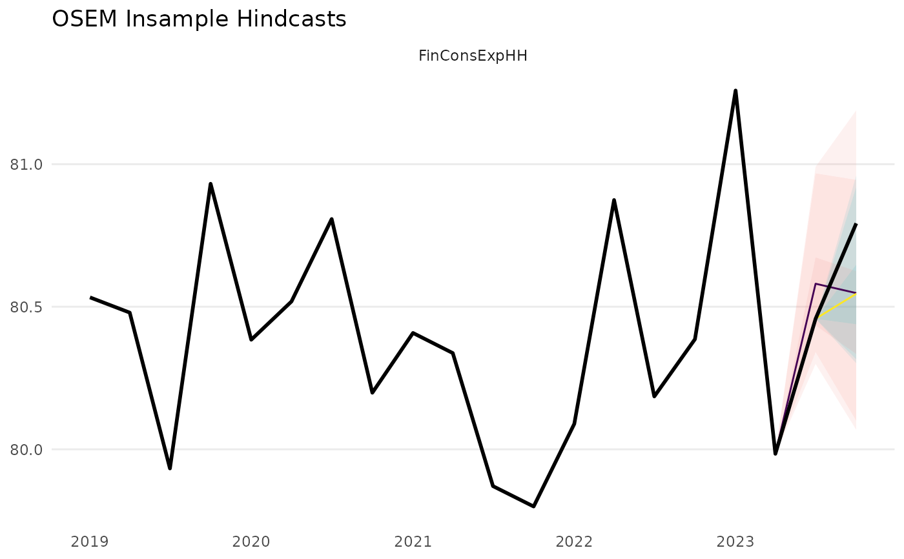

Root Mean Squared Forecast Error
rmsfe.RdRoot Mean Squared Forecast Error
Arguments
- forecast
A forecast object as returned by
forecast_model.- data
A tibble or data.frame containing the original data used for estimation.
Examples
specification <- dplyr::tibble(
type = c(
"n"
),
dependent = c(
"FinConsExpHH"
),
independent = c(
"FinConsExpGov + HICP_Gas"
)
)
set.seed(123)
testdata <- dplyr::tibble(
time = seq.Date(from = as.Date("2005-01-01"),
to = as.Date("2023-10-01"),
by = "quarter"),
FinConsExpGov = rnorm(mean = 100, n = length(time)),
HICP_Gas = rnorm(mean = 200, n = length(time)),
FinConsExpHH = 0.5 + 0.2*FinConsExpGov + 0.3 *
HICP_Gas + rnorm(length(time), mean = 0, sd = 0.2))
testdata <- tidyr::pivot_longer(testdata,
cols = -time,
names_to = "na_item",
values_to = "values")
model <- run_model(specification = specification,
dictionary = dict,
inputdata_directory = testdata,
primary_source = "local",
present = FALSE,
quiet = TRUE,
saturation = "IIS")
insample_output <- forecast_insample(model, sample_share = 0.97)
#> [1] "Model Run 1 up to 2023-04-01"
#> [1] "Model Run 2 up to 2023-07-01"
#> [1] "Model Run 3 up to 2023-10-01"
#> [1] "Forecast 1 from 2023-04-01 to 2023-10-01"
#> [1] "Forecast 2 from 2023-07-01 to 2023-10-01"

insample_output$rmsfe
#> # A tibble: 4 × 5
#> na_item rmsfe start end method
#> <chr> <dbl> <date> <date> <chr>
#> 1 Total RMSFE 0.194 2023-04-01 2023-10-01 AR
#> 2 FinConsExpHH 0.194 2023-04-01 2023-10-01 AR
#> 3 Total RMSFE 0.247 2023-07-01 2023-10-01 AR
#> 4 FinConsExpHH 0.247 2023-07-01 2023-10-01 AR